Tutorial #7
- Font Creation
- Creating a glyph (tracing outlines)
- Navigating to other glyphs
- On to the next glyph (consistent directions)
- Consistent serifs and stem widths
- Building accented glyphs
- Building a ligature
- Lookups and features
- Examining metrics
- Kerning
- Glyph variants
- Anchoring marks
- Conditional features
- Checking your font
- Generating it
- Font Families
- Final Summary
- Bitmap strikes
- Scripting Tutorial
- Notes on various scripts
Conditional Features
OpenType and Apple fonts both provide contextual features. These are features which only take place in a given context and are essential for typesetting Indic and Arabic scripts. In OpenType a context is specified by a set of patterns that are tested against the glyph stream of a document. If a pattern matches then any substitutions it defines will be applied. In an Apple font, the context is specified by a state machine -- a mini program which parses and transforms the glyph stream.
Conditional features may involve substitutions, ligatures or kerning (and some more obscure behaviors). First I shall provide an example of a contextual substitution, later of contextual ligatures.
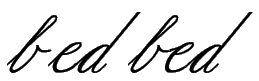Instead of an Indic or Arabic example, let us take something I'm more familiar with, the problem of typesetting a latin script font where the letters ``b,'' ``o,'' ``v'' and ``w'' join their following letter near the x-height, while all other letters join near the baseline. Thus we need two variants for each glyph, one that joins (on the left) at the baseline (the default variant) and one which joins at the x-height. Let us call this second set of letters the ``high'' letters and name them ``a.high,'' ``b.high'' and so forth.
OpenType Example
| The following example may not work! The font tables produced by it are
all correct, but the designers of OpenType (or its implementors) decided
that the latin script does not need complex conditional features and many
implementations of OpenType do not support them for latin. This is not even
mentioned in the standard, but is hidden away in supplemental information
on microsoft's site.
Why do I provide an example which doesn't work? It's the best I can do. If I knew enough about Indic or Arabic typesetting I would provide an example for those scripts. But I don't. The procedures are the same. If you follow them for some other scripts they will work. On some systems and in some applications 'calt' is supported for latn and this example will work. On other systems/applications the example can be made to work by replacing the 'calt' feature tag (conditional alternatives) with a Required tag (but I gather that is now deprecated). |
We divide the set of possible glyphs into three classes: the letters ``bovw'', all other letters, and all other glyphs. We need to create two patterns, the first will match a glyph in the ``bovw'' class followed by another glyph in the ``bovw'' class, while the second will match a glyph in the ``bovw'' class followed by any other letter. If either of these matches the second glyph should be transformed into its high variant.
- [bovw] [bovw] => Apply a substitution to second letter
- [bovw] <any other letter> => Apply a substitution to the second letter
(You might wonder why I don't just have a class of all letters and use one rule instead of two? Because in this case all my classes must be disjoint, I mayn't have one glyph appearing in two classes).
The first thing we must do is create a simple substitution mapping each low letter to its high variant. This is a "Simple Substitution" lookup, but it will not be attached to any feature, instead it will be invoked by a contextual lookup. Let us call this lookup "high". We must (of course) create a subtable to go with our lookup, and we can use the [Default with Suffix:] button to fill it up with the high variants.
The tricky part is defining the context. This is done by defining yet another lookup, a contextual chaining lookup which should be associated with a 'calt' feature. And of course we want an associated subtable). This will pop up a series of dialogs to edit a contextual subtable
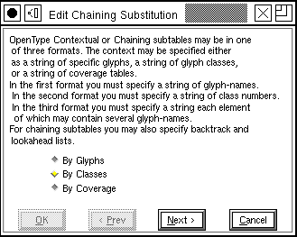The first dialog
allows you to specify the overall format of the substitution. We want a class
based system -- we've already mentioned what the glyph classes will
be.
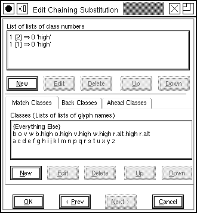The next dialog finally shows something interesting. At the top are a series of patterns to match and substitutions that will be applied if the string matches. Underneath that are the glyph classes that this substitution uses. A contextual chaining dialog divides the glyph stream into three categories: those glyphs before the current glyph (these are called backtracking glyphs), the current glyph itself (you may specify more than one), and this (these) glyphs may have simple substitutions applied to them, and finally glyphs after the current glyph (these are called lookahead glyphs).
Each category of glyphs may divide glyphs into a different set of classes, but in this example we use the same classes for all categories (this makes it easier to convert the substitution to Apple's format). The first line (in the ``List of lists'' field) should be read thus: If a backtracking glyph (the glyph before the current one) in class 1 is followed by the current glyph in class 2, then location 0 --the only location -- in the match string (that is the current glyph) should have simple substitution `high' applied to it.
If you look at the glyph class definitions you will see that class 1 includes those glyphs which must be followed by a high variant, so this seems reasonable.
The second line is similar except that it matches glyphs in class 1. Looking
at the class definitions we see that classes 1 & 2 include all the letters,
so these two lines mean that if any letter follows one of ``bovw'' then that
letter should be converted to its `high' variant.
 To edit a glyph
class simply double click on it. To create a new one press the [New] button
(under the class list). This produces another dialog showing all the names
of all the glyphs in the current class. Pressing the [Select] button will
set the selection in the font window to match the glyphs in the class, while
the [Set] button will do the reverse and set the class to the selection in
the font window. These provide a short cut to typing in a lot of glyph names.
To edit a glyph
class simply double click on it. To create a new one press the [New] button
(under the class list). This produces another dialog showing all the names
of all the glyphs in the current class. Pressing the [Select] button will
set the selection in the font window to match the glyphs in the class, while
the [Set] button will do the reverse and set the class to the selection in
the font window. These provide a short cut to typing in a lot of glyph names.
Pressing the [Next] button defines the class and returns to the overview
dialog.
To edit a pattern double click on it, or to create a new one press the [New] button (under the List of lists). Again the pattern string is divided into three categories, 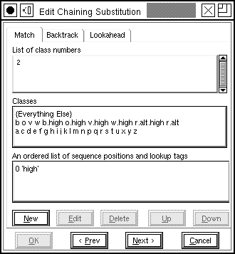those glyphs before the current one, the current one itself, and any glyphs after the current one. You choose which category of the pattern you are editing with the tabs at the top of the dialog.
Underneath these is the subset of the pattern that falls within the current category, the classes defined for this category, and finally the substitutions for the current glyph(s). Clicking on one of the classes will add the class number to the pattern.
To edit a substitution double click on it, or to create a new one press the
[New] button (under ``An ordered list...''). The sequence number specifies
which glyph among the current glyphs should be modified, and the tag specifies
a four character substitution name
A warning about contextual behavior: Not all software supports them. And even more confusing software may support them for some scripts and not for others.
Apple advanced typography
Apple specifies a context with a finite state machine, which is essentially a tiny program that looks at the glyph stream and decides what substitutions to apply. Each state machine has a set of glyph class definitions (just as in the OpenType example), and a set of states. The process begins in state 0 at the start of the glyph stream. The computer determines what class the current glyph is in and then looks at the current state to see how it will behave when given input from that class. The behavior includes the ability to change to a different state, advancing the input to the next glyph, applying a substitution to either the current glyph or a previous one (the ``marked'' glyph).
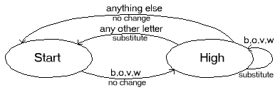Using the
same example of a latin script font... We again need a simple substitution
to convert each letter into its high alternate. The process is the same as
it was for OpenType, and indeed we can use the same substitution. Again we
divide the glyphs into three classes (Apple gives us some extra classes whether
we want them or no, but conceptually we use the same three classes as in
the OpenType example). We want a state machine with two states (again Apple
gives us an extra state for free, but we shall ignore that), one is the start
state (the base state -- where nothing changes), and the other is the state
where we've just read a glyph from the ``bovw'' class.
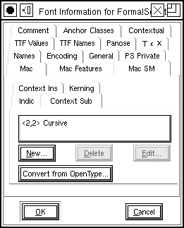 Apple Advanced Typography does not quite fit into the OpentType concepts of lookups and features, but it is close enough that I sort of force it to. So once again we create a GSUB lookup. This time the lookup type is "Mac Contextual State Machine", and the feature is actually a mac feature/setting, two numbers. When we create a new subtable of this type we get a state machine dialog, as shown below.
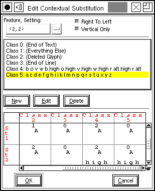 At the top of
the dialog we see a set of class definitions, and at the bottom is a
representation of the state machine itself.
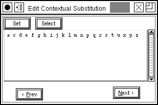Double clicking
on a class brings up a dialog similar to that used in OpenType
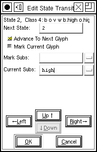 Clicking on a transition in the state machine (there is a transition for each state / class combination) produces a transition dialog. This controls how the state machine behaves when it is in a given state and receives a glyph in a given class. In this example it is in state 2 (which means it has already read a ``bovw'' glyph), and it has received a glyph in class 4 (which is another ``bovw'' glyph). In this case the next state will be state 2 again (we will have just read a new ``bovw'' glyph), read another glyph and apply the ``high'' substitution to the current glyph.
At the bottom of the dialog are a series of buttons that allow you to navigate through the transitions of the state machine.
Pressing [OK] many times will extract you from this chain of dialogs and
add a new state machine to your font.
OpenType, Greek ligatures
Greek has a character (U+03D7) which is equivalent to the Latin ampersand. Just as the ampersand is (originally) a ligature of "E" and "t", so U+03D7 is a ligature of "kappa" and "iota". However this ligature should only be used if "kappa" and "iota" make up a word unto themselves, it should not be used for more normal occurances of the two within a longer word.
 So
the first thing to do is create the ligature itself. Add the glyph for U+03D7,
and then create a ligature lookup and subtable (with
So
the first thing to do is create the ligature itself. Add the glyph for U+03D7,
and then create a ligature lookup and subtable (with
Element->Font
Info->Lookups) to bind U+03D7 to be a ligature of "kappa" and
"iota". This lookup will never be used directly -- only under the control
of another, a conditional feature -- so we don't give it a feature
tag.
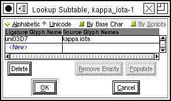
Next the conditional bit.
I'm going to use the notation <letters> to represent a class consisting of all greek letters.
- <letters> kappa iota => no substitution
- kappa iota <letters> => no substitution
- kappa iota => apply the ligature "WORD"
(Now as I read the standard all these rules could be put into one subtable, and the font validation tools I have agree with me -- but the layout engines do not. The layout engines seem to insist that each rule live in its own subtable. This is inconvenient (the classes must be defined in each subtable) but it seems to work.)
These rules will be executed in order, and the first one that matches the
input text will be the (one and only) rule applied. Consider these three
strings,  ,
,
 ,
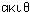 all contain kappa
and iota but each contains more letters around them, so none should be replaced
by the ligature.
,
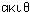 all contain kappa
and iota but each contains more letters around them, so none should be replaced
by the ligature.
-
The first string,
 ,
will match the first rule above (it contains letters before the kappa iota
sequence) and no substitution will be done. It also matches the third rule,
but we never get that far.
,
will match the first rule above (it contains letters before the kappa iota
sequence) and no substitution will be done. It also matches the third rule,
but we never get that far.
-
The second string,
 ,
will match the second rule above (it contains letters after the sequence)
and again no substitution will be done. It would match the third rule, but
we stop with the first match.
,
will match the second rule above (it contains letters after the sequence)
and again no substitution will be done. It would match the third rule, but
we stop with the first match.
- The third string, , matches all the rules, but since the search stops at the first match, only the first rule will be applied, and no substitution will be done.
- The string, , matches neither of the first two rules but does match the last, so here the ligature will be formed.
You might wonder why I don't just have one rule
- <any non-letter> kappa iota <any non-letter> => apply our ligature
It seems much simpler.
Well there's one main reason:
- This does not work if the kappa is at the beginning of the input stream (it will not be preceded by any glyphs, but might still need replacing), or iota at the end.
Now how do we convert these rules into a contextual lookup?
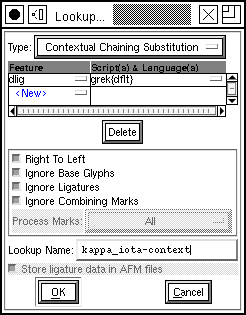We
use Element->Font
Info->Lookups->Add Lookup to create a new contextual chaining
lookup. This is the top level lookup and should be bound to a feature tag
in the Greek script.
We have three rules, each rule lives in its own subtable, so we will create
three subtables, one for each. The order in which these subtables n the Lookups
pane is important because that is the order in which the the rules they contain
will be executed. We must insure that that final rule which actually invokes
the ligature is the last one executed (and the last one in the
list).
| 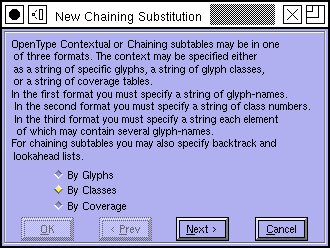 Since we are planning on using the class of all greek letters we will want to use a class format for this feature. Then we press the [Next>]
button. |
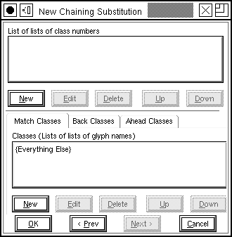 The main match will be on the letters kappa and iota in all three rules, so we need one class for each of them. So in the Match Classes area we press the [New] button... |
| 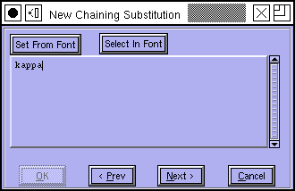 And type in the word "kappa" and press [Next>] |
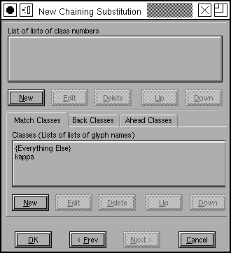 Now we have a class containing the single glyph "kappa". We want to do the same thing for "iota" so we press [New] again. |
| 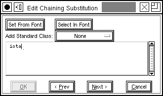 Again type in "iota" and press [Next>] |
 Now we have all the classes we need here. We still need to create classes for the lookahead and backtrack. We only need one class for these groups and that class will consist of all greek letters. |
| 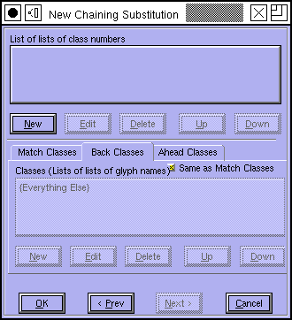 The check box [*] Same as Match Classes is set, but we don't
want that, we want our own classes here. So uncheck it. |
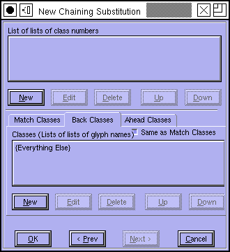 Now the buttons become active and we can create a new class by pressing [New] |
| 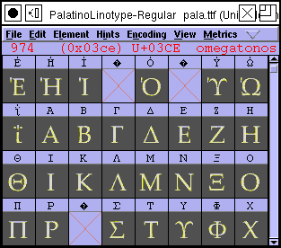 Now you could go back to the font view and select all of the greek letters, and then press the [Set From Font] button in the class dialog. |
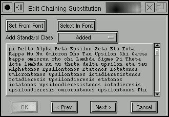 But in this case the class we are interested in (all the greek letters) is built it, and you can select it from the Standard Class pulldown list (Letters in script(s)) Then press [Next>]. |
| 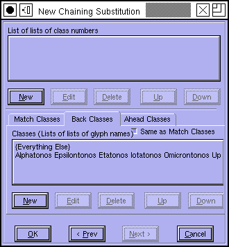 | 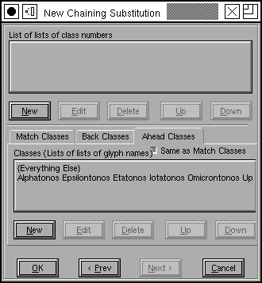 Then go through the same process for the look ahead classes (adding one class which consists of all the greek letters. |
Now we have all our classes defined and are finally ready to create the
patterns for our rules. So underneath "List of lists of class numbers" press
the [New] button.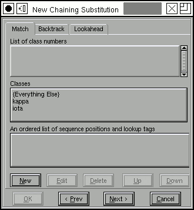 |
The first rule begins with all the greek letters in the backtrack area,
so click on the "Backtrack" tab, and then press on the class consisting of
all the greek letters. This puts the class number into the pattern area (the
List of class numbers) |
| In the match area we want to match kappa and then iota, so click on the
Match tab, and then on the entries for "kappa" and "iota". 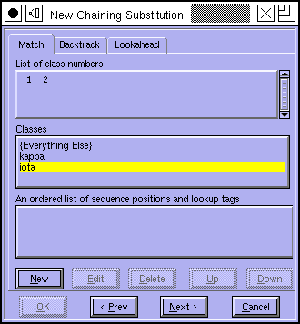 This rule has no substitutions, so leave the bottom area blank and press [Next>]. |
We are done with the first rule. It says:
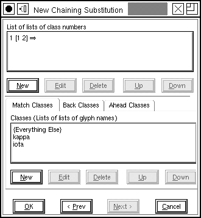 |
We are done with the second rule. It says:
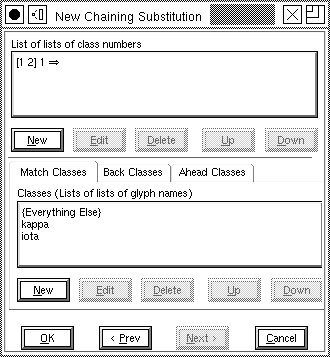 |
This rule does have substitutions -- we want to take the two characters and convert them into a ligature. So Press [New] under the sequence
position list, we want to start at the first character (sequence position
0) and apply the ligature we called "WORD":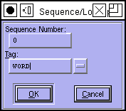 |
| So if anything doesn't match the first two rules, and does contain a
kappa followed by an iota, it must be a two letter stand-alone greek word.
And we want to apply our ligature to it. 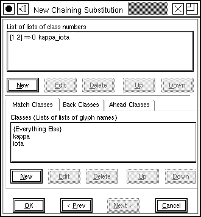 |
Now we are done. Press a series of [OK]s until all the dialogs
have been accepted.
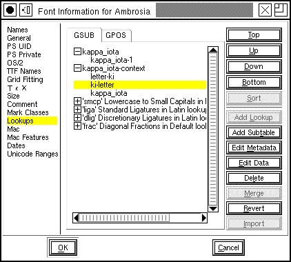 |
Once you have created your lookups you may test the result in the
metrics
view.
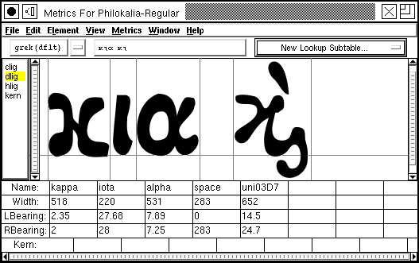
(This example was provided by Apostolos Syropoulos)